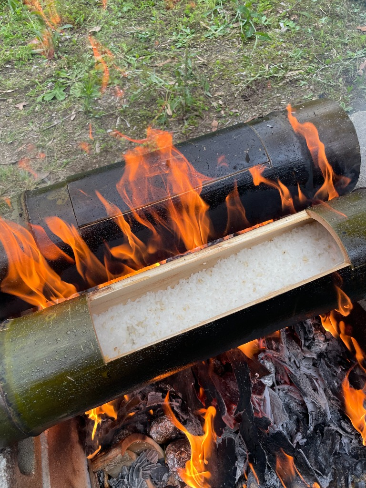
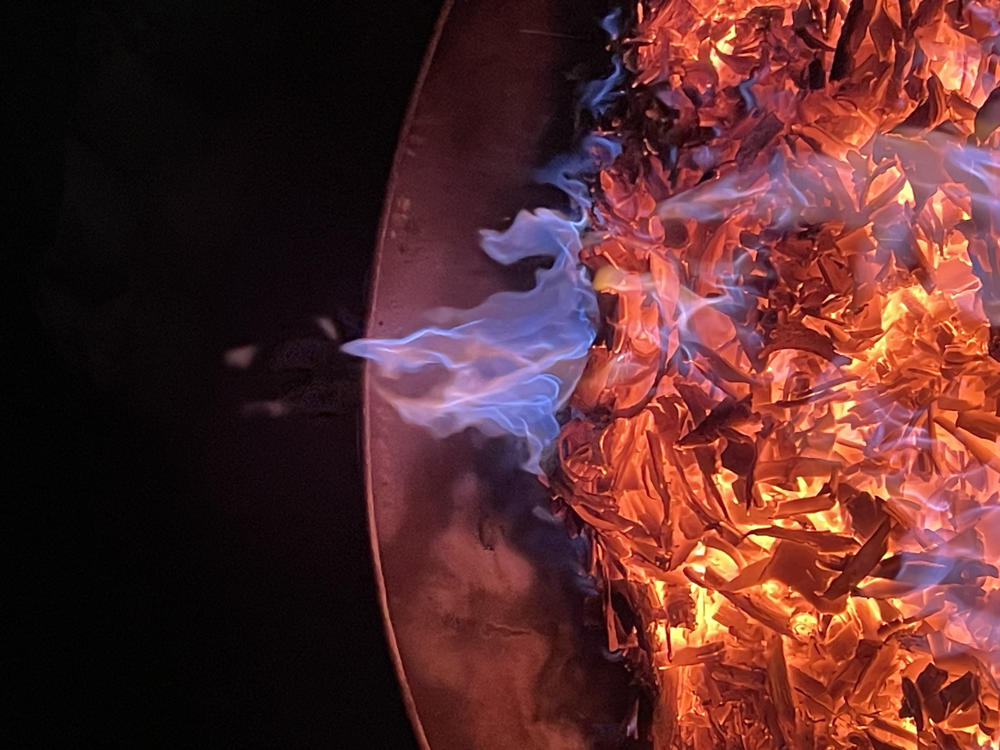

魂の羅針盤 × 竹の杜
一泊二日 ・ 8名限定
満月が人とつながる夜なら、
新月は自分の軸と出会う夜。
闇の中でしか見えない星がある。
↓ scroll


Opening
好きなことをしているはずなのに、どこかでズレを感じる。進んでいるのに、何かが定まっていない。人と関わる中で、自分の軸が少し見えにくくなる。
その違和感は、弱さじゃない。
羅針盤が動こうとしているサインかもしれない。
新月会は、答えを出す場ではない。
「今の仮の一言」を持ち帰る場だ。
Concept
人とつながる場。
外へひらく時間。
出会い、笑い、横のつながりが生まれる。
自分の軸とつながる場。
内側へ降りていく時間。
静かに、自分の衝動を言葉にする。
「満月でひらいたものを、新月で静かに深める。
この補完関係が、竹の杜全体に
明るくひらく時間と、静かに深まる時間を生む。」
For Who
Program
完成させてから始めるのではなく、身体と対話しながら、言葉を育てる。
— 1日目の夜
竹の杜へ。焚き火と竹あかりに囲まれながら、竹筒で炊いたご飯を食べる。新月の闇が、場を整える。
「最近、なんかしっくりこないことはありますか？」
答えを出さなくていい。深掘りしない。ただ問いを置く。
気づいたら何度もやってしまっていることを、紙に書く。
書いた紙は閉じる。夜のうちに、身体に届かせる。
— 2日目の朝
水が打ちつけてくるその瞬間、言語は消える。空っぽになってからのスタート。
昨夜の紙を開く。身の回りに自然と置いているもの、止まれなくなっていること、気づいたらやってしまっていることから、「行為」だけを残す。
完璧な答えじゃなくていい。正解じゃなくていい。「今日の仮」でいい。その一語を持って、日常に戻る。
「帰宅したら、お風呂に竹炭を入れて。
今日、仮の一言を生きていた瞬間はあったか。
一日の終わりに、羅針盤を振り返る。」
The Place
千早赤阪村の竹の杜は、バンブー池田が長年守り育てた場所だ。
炎と闇と緑が共存する、日常から切り離された空間がある。
Includes
焚き火 ・ 竹あかり
新月の闇が舞台をつくる
竹筒ご飯
竹の器で炊く、特別な食事
滝行 ・ 座禅
身体から空っぽにする朝
魂の羅針盤
言語化ワーク（前田薫）
一泊の宿泊
竹の杜の敷地内
お風呂用竹炭（お持ち帰り）
日常の羅針盤タイムのために
※竹炭は体験を日常に持ち帰るための「装置」として含まれます。物販ではありません。
Price & Date
フォーム公開まで今しばらくお待ちください。
Hosts
千早赤阪村で竹の杜を守り育てる。焚き火、竹あかり、竹炭、滝行。身体で感じる場づくりのプロ。満月会を主宰し、竹の力と人の縁をつなぐ。
「なんかしっくりこない」という感覚を、弱さではなくサインとして受け取る人がいる。
その人の中にある、まだ言葉になっていない本音を、一緒に掘り起こす。答えを与えない。変えようとしない。ただ問いを置き、相手自身の言葉が立ち上がるのを待つ。
人の本音を瞬時に捉える対話力を、1対1のコーチングから、場・企画・地域全体へと拡張してきた。かおる塾（グループコーチング）、天川サマーキャンプ、座禅会を主宰。
奈良県天川村在住。師・高衣紗彩のもとで中庸思考・人生デザインを学ぶ。
「バンブーの場があるから、僕のコンテンツが生きる。
僕のコンテンツがあるから、場の価値が言葉として伝わる。
どちらが上でも下でもない。」
— 前田 薫
FAQ
Q. コーチングやワークショップが初めてでも大丈夫ですか？
大丈夫です。むしろ、初めての方の方が先入観なく体験できます。答えを出す場ではなく、「今の仮」を持ち帰る場なので、正解はありません。
Q. 滝行は必須ですか？体力に自信がないのですが。
参加は自由です。見学でも、全く問題ありません。大切なのは、その空間に身を置くこと。強制は一切ありません。
Q. 一人での参加でも大丈夫ですか？
もちろんです。一人での参加者がほとんどです。定員8名の小さな場なので、初めての方でも安心して過ごせます。
Q. 竹炭はどのように使うのですか？
お風呂に入れてご使用ください。一日の終わりに湯船に浸かりながら、「今日、自分の仮の一言を生きていた瞬間はあったか」と振り返る時間をつくるためのものです。
Q. アクセスを教えてください。
大阪府千早赤阪村（竹の杜）。詳細は申し込み後にご案内します。お車でのご来場を推奨しています。